Del disco de Nebra al arte moderno
A lo largo de la historia, el asombro del ser humano ante los eclipses se ha manifestado a través de representaciones artísticas muy diversas, que funcionan como un registro de la evolución del conocimiento astronómico y la sensibilidad estética. Una de las piezas más antiguas y significativas es el Disco de Nebra (ca. 1600 a. C.), una obra de la Edad de Bronce hallada en Alemania que constituye una de las primeras representaciones portátiles del Sol, la Luna y las Pléyades.
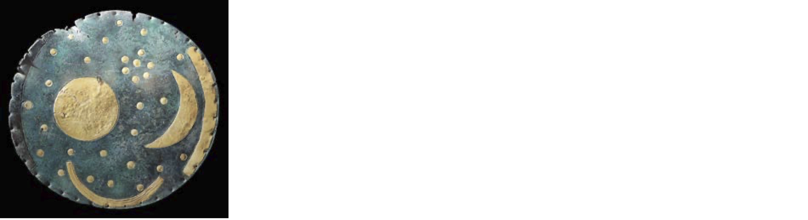
En la tradición artística occidental, los eclipses solares han estado profundamente vinculados a la iconografía religiosa, especialmente a la crucifixión de Cristo. Los evangelistas describen una oscuridad que cubrió la tierra durante la muerte de Jesús, evento que la tradición suele asociar a un eclipse solar. Sin embargo, los historiadores y científicos señalan una contradicción astronómica: la crucifixión ocurrió durante la Pascua judía, que coincide con la luna llena, fase en la cual es imposible que ocurra un eclipse de Sol. A pesar de esto, artistas como Taddeo Gaddi (ca. 1330) representaron este momento mostrando a la Luna aproximándose al astro rey sobre la cruz.
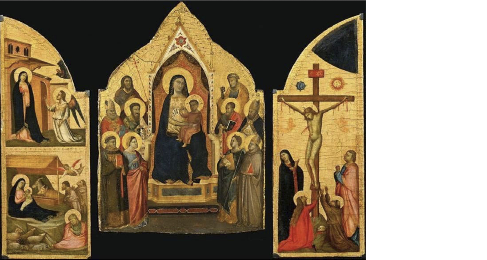
El arte ha recurrido a ingeniosas estrategias visuales para plasmar un fenómeno que es difícil de observar directamente. Por ejemplo, un pintor valenciano del siglo XV representó el Sol con una superficie cuarteada para sugerir la presencia de la Luna, sin oscurecer el cielo, posiblemente porque nunca había presenciado un eclipse total.
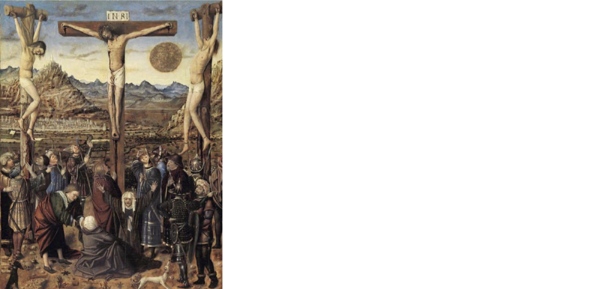
Más tarde, José de Ribera (1643) optó por un estilo más simbólico en su Cristo crucificado, pintando un disco lunar translúcido que permitía ver el perfil del Sol detrás, facilitando la identificación del evento para el espectador.
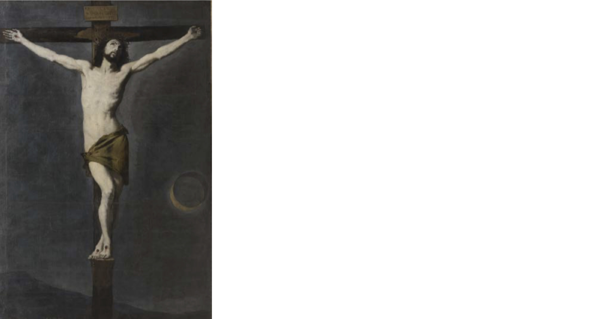
Por su parte, Rubens (1610-1611) delineó el contorno lunar completo en su obra para la catedral de Amberes, una licencia artística necesaria ya que dicho contorno no es visible al inicio de un eclipse solar real.
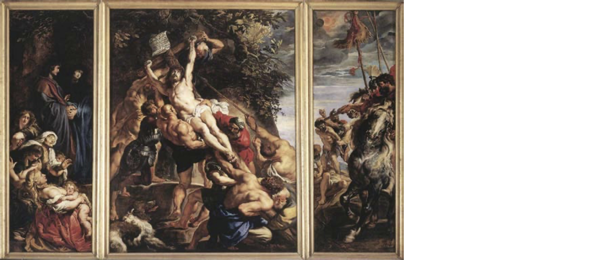
El realismo documental también tiene un lugar destacado en obras como el Libro de los Milagros de Augsburgo (ca. 1550). Este manuscrito ilustrado recoge con notable precisión el eclipse total de Sol de 1483, aunque lo sitúa junto a otros eventos considerados "prodigios" o mensajes divinos, como una plaga de langostas.
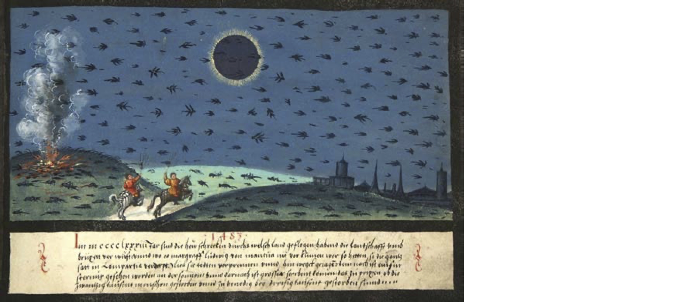
En una línea similar, Antoine Caron (1570-80) pintó a astrónomos observando un eclipse, integrando elementos científicos como la esfera armilar, cálculos geométricos y la presencia de Urania, la musa de la astronomía. En esta obra, el Sol adquiere un tono rosáceo rodeado de una nebulosidad amarilla que podría interpretarse como una representación temprana de la corona solar.
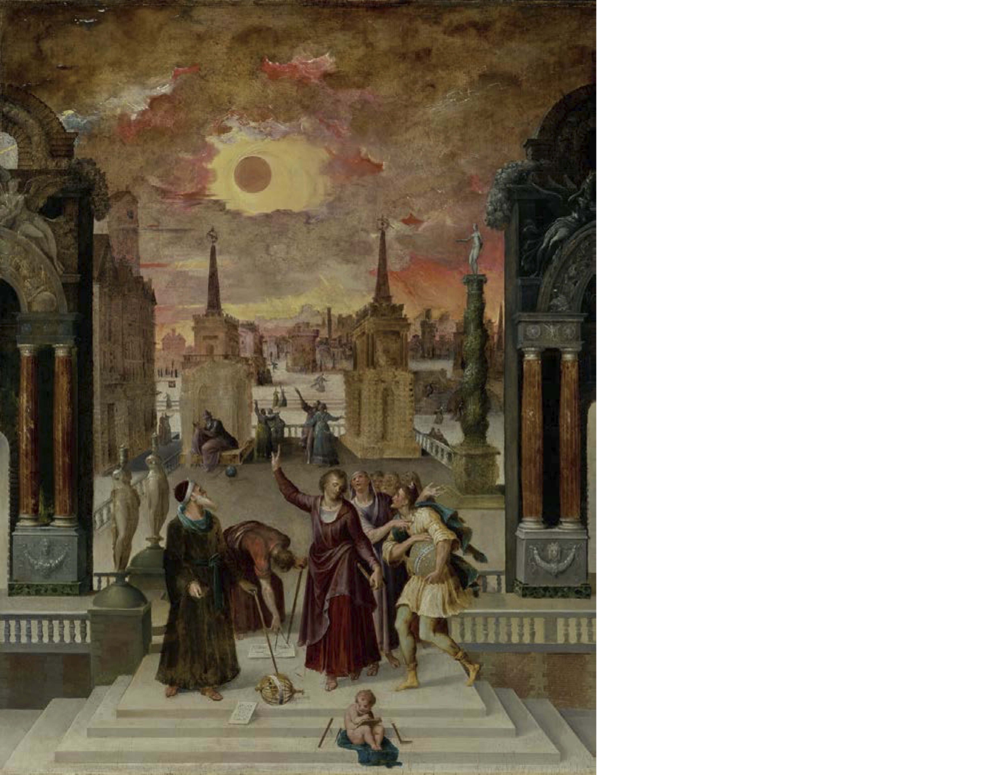
La ciencia y el arte se entrelazan de forma magnífica en la Real Biblioteca de El Escorial. Pellegrino Tibaldi (1588-91) decoró la bóveda con frescos que incluyen a Dionisio Areopagita observando el eclipse de la crucifixión mediante un astrolabio. Esta representación se basa en fuentes apócrifas que asocian a este personaje con la observación astronómica desde Egipto.
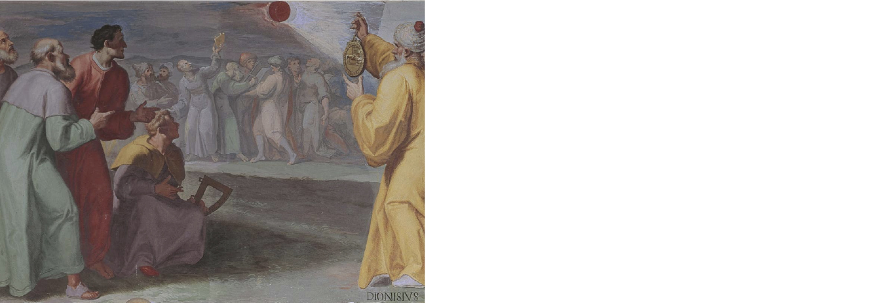
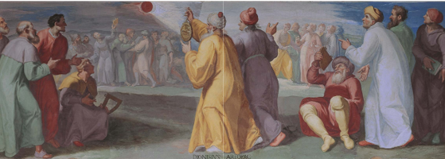
Pellegrino Tibaldi, Dionisio Areopagita observando el eclipse
el día de la muerte de Cristo (1588-91)
Real Biblioteca. San Lorenzo de El Escorial.
Con la llegada del telescopio en 1609 gracias a Galileo, el arte comenzó a reflejar una nueva era de descubrimientos. A comienzos del siglo XVIII, el conde Luigi Ferdinando Marsili encargó a Donato Creti una serie de pinturas sobre observaciones astronómicas para regalárselas al Papa Clemente XI. El objetivo era convencer al pontífice de la importancia de construir un observatorio astronómico en Bolonia. Las obras de Creti no solo son bellas, sino que documentan métodos científicos, como el método de proyección mediante un telescopio para observar el Sol de forma segura.
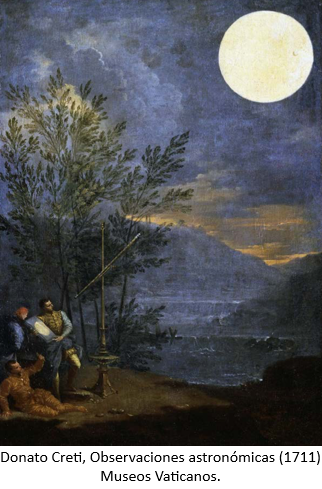
El Romanticismo del siglo XIX aportó visiones más atmosféricas y sugerentes. Ippolito Caffi (1842) capturó la frontera entre la sombra y la luz sobre Venecia durante un eclipse.
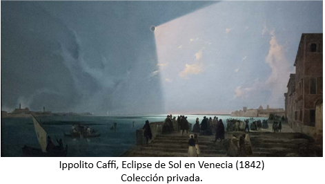
Mientras que el pintor ruso Iván Aivazovski (1851) ofreció una visión nocturna y casi mística del fenómeno observado desde Feodosia.
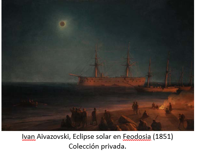
Finalmente, el siglo XX trajo consigo la abstracción y nuevas formas de capturar la energía del evento. Paul Klee utilizó elementos simbólicos y primitivos para rodear al Sol eclipsado en su acuarela. Por otro lado, Roy Lichtenstein (1975), máximo exponente del pop art, utilizó la superposición de círculos y curvas para transmitir el dinamismo y la rapidez con la que llega y pasa la totalidad en un eclipse solar. Todas estas obras demuestran que, independientemente de la época o el estilo, los eclipses siguen siendo una fuente inagotable de inspiración que une la curiosidad científica con la expresión artística.
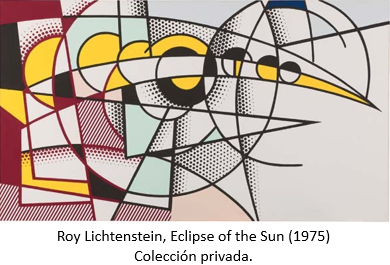